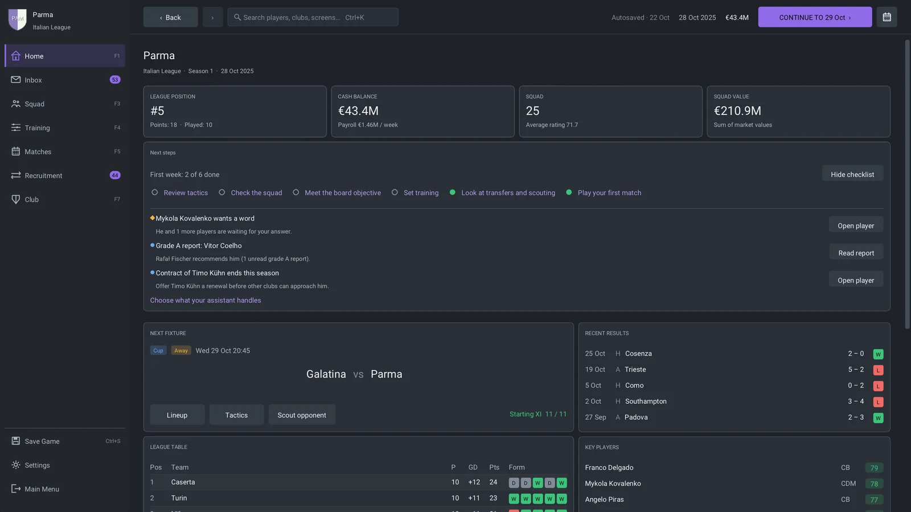

An open-source football management game
Your club.
Your football.
Build a squad you believe in. Give it a way to play. Take a club—and your career—as far as you can.
More than ninety minutes
A club is built
one decision at a time.
The next signing. The shape without the ball. The academy prospect you give a chance. It all becomes part of your season.
Find the players.
Make them a team.
Scout talent, negotiate transfers and contracts, set training and grow your academy. Balance what you need today with the club you want next season.
Explore squad building ↗

Put your ideas
on the pitch.
Choose formations, roles and duties. Build a different shape with the ball, respond to the opponent, and make your changes from the touchline.
See how player behavior works ↗The club goes on
between matches.
Keep the board, supporters and dressing room on your side. Manage the finances, handle the inbox and earn your next job—or lead a national team.
Take your first steps ↗
Watch it happen
The game, in motion.
Two ways to read the same football. Watch, take control with a keyboard or gamepad, or leave the match to your team.
From the stands to the touchline
A real match in the 3D broadcast view, with the pitch in focus.
See the shape of the game
The tactical view makes movement, space and passing choices easier to read.
Captured directly from a real career in the game. Silent clips · 15 seconds · 30 fps · 1× playback.
See every game screen ↗Football belongs to everyone
A game you can
make your own.
Read the engine. Change the world data. Help improve a screen, a translation or a passing decision. The code is open, and your first contribution can be small.
- A documented match engineHow physics, rules, tactics and player decisions work.
- World data you can editJSON clubs, players and name pools, with a modding guide.
- Your name in the gameContributor credits, or a fictional player at your favorite club.
Your next season starts here
Build it.
Pick your club.
Version 1.0 is being prepared for release. Start from source with the platform guide, then create your manager and choose a club—or start unemployed.
Linux, macOS & Windows setup ↗git clone https://github.com/FlavioMili/FootballManagement.git
cd FootballManagement
cmake --preset release
cmake --build --preset release --parallel 4
./out/build/release/src/Player12Linux quickstart after installing the prerequisites. macOS and Windows need their platform-specific setup.